Hardware support¶
sigrok is intended as a flexible, cross-platform, and hardware-independent software suite, i.e., it supports various devices from many different vendors.
Here is a list of currently supported devices (various stages of completeness) in the latest git version of libsigrok (fewer devices might be supported in tarball releases) and devices we plan to support in the future. The README.devices document discusses more device or platform specific details, physical transports, dependencies on firmware and external tools, how to enable communication modes, etc.
The lists are sorted by category ( supported: 258, in progress: 27, planned: 144), and alphabetically within those categories.
Logic analyzers¶
-
[](/wiki/128axc-based_USBee_AX-Pro_clone)
128axc-based USBee AX-Pro clone (8ch, 24MHz)
-
[](/wiki/ARMFLY_Mini-Logic)
ARMFLY Mini-Logic (8ch, 24MHz)
-
[](/wiki/ASIX_OMEGA)
ASIX OMEGA (16ch, 400MHz)
-
[](/wiki/ASIX_SIGMA)
ASIX SIGMA (16ch, 200MHz)
-
[](/wiki/AZDelivery_Logic_Analyzer)
AZ-Delivery Logic Analyzer] (8ch, 24MHz)
-
[](/wiki/BeagleLogic)
BeagleLogic (12(max 14)ch, 100MHz)
-
[](/wiki/Braintechnology_USB_Interface_V2.x)
Braintechnology USB Interface V2.x (8/16ch, 24/12MHz)
-
[](/wiki/Braintechnology_USB-LPS)
Braintechnology USB-LPS (8/16ch, 24/12MHz)
-
[](/wiki/ChronoVu_LA8)
ChronoVu LA8 (8ch, 100MHz)
-
[](/wiki/ChronoVu_LA16)
ChronoVu LA16 (16ch, 200MHz)
-
[](/wiki/CWAV_USBee_SX)
CWAV USBee SX (8ch, 24MHz)
-
[](/wiki/Dangerous_Prototypes_Buspirate)
Dangerous Prototypes Buspirate (5ch, 1MHz)
-
[](/wiki/Dangerous_Prototypes_USB_IR_Toy)
Dangerous Prototypes USB IR Toy (1ch, 10kHz)
-
[](/wiki/DreamSourceLab_DSLogic)
DreamSourceLab DSLogic (16ch, 400MHz)
-
[](/wiki/DreamSourceLab_DSLogic_Basic)
DreamSourceLab DSLogic Basic (16ch, 100MHz)
-
[](/wiki/DreamSourceLab_DSLogic_Plus)
DreamSourceLab DSLogic Plus (16ch, 400MHz)
-
[](/wiki/DreamSourceLab_DSLogic_Pro)
DreamSourceLab DSLogic Pro (16ch, 400MHz)
-
[](/wiki/EE_Electronics_ESLA100)
EE Electronics ESLA100 (8ch, 24MHz)
-
[](/wiki/FTDI-LA)
FTDI-LA (8ch, ~10MHz)
-
[](/wiki/JTAGulator)
Grand Idea Studio JTAGulator (24ch, 1.2MHz)
-
[](/wiki/GreatFET_One)
GreatFET One (8/4/2/1ch, 40.8/68/102/204MHz)
-
[](/wiki/Hantek_4032L)
Hantek 4032L (32ch, 400MHz)
-
[](/wiki/Hantek_6022BL)
Hantek 6022BL (8ch, 24MHz)
-
[](/wiki/Hobby_Components_HCTEST0006)
Hobby Components HCTEST0006 (8ch, 24MHz)
-
[](/wiki/IKALOGIC_Scanalogic-2)
IKALOGIC Scanalogic-2 (4ch, 20MHz)
-
[](/wiki/IKALOGIC_ScanaPLUS)
IKALOGIC ScanaPLUS (9ch, 100MHz)
-
[](/wiki/Kingst_LA2016)
Kingst LA2016 (16ch, 200MHz)
-
[](/wiki/Kingst_LA5016)
Kingst LA5016 (16ch, 500MHz)
-
[](/wiki/Kingst_LA5032)
Kingst LA5032 (32ch, 500MHz)
-
[](/wiki/KingST_KQS3506-LA16100)
KingST KQS3506-LA16100 (16ch, 100/50/32/16MHz @ 3/6/9/16ch)
-
[](/wiki/Lcsoft_Mini_Board)
Lcsoft Mini Board (8/16ch, 24/12MHz)
-
[](/wiki/LeCroy_LogicStudio)
LeCroy LogicStudio (8/16ch, 1GHz/500MHz)
-
[](/wiki/Logic_Shrimp)
Logic Shrimp (4ch, 20MHz)
-
[](/wiki/MCU123_Saleae_Logic_clone)
MCU123 Saleae Logic clone (8ch, 24MHz)
-
[](/wiki/Meilhaus_Logian-16L)
Meilhaus Logian-16L (16ch, 200MHz)
-
[](/wiki/Microchip_PICkit2)
Microchip PICkit2 (3ch, 1MHz)
-
[](/wiki/MCU123_USBee_AX_Pro_clone)
MCU123 USBee AX Pro clone (8ch, 24MHz)
-
[](/wiki/Mcupro_Logic16_clone)
mcupro Logic16 clone (16ch, 100MHz)
-
[](/wiki/Noname_Saleae_Logic_clone)
Noname Saleae Logic clone (8ch, 24MHz)
-
[](/wiki/Openbench_Logic_Sniffer)
Openbench Logic Sniffer (32ch, 100MHz)
-
[](/wiki/Prist_AKIP-9101)
Prist AKIP-9101 (16ch, 200MHz)
-
[](/wiki/Robomotic_BugLogic_3)
Robomotic BugLogic 3 (8ch, 24MHz)
-
[](/wiki/Robomotic_MiniLogic)
Robomotic MiniLogic (8ch, 24MHz)
-
[](/wiki/Saleae_Logic)
Saleae Logic (8ch, 24MHz)
-
[](/wiki/Saleae_Logic16)
Saleae Logic16 (16ch, 100/50/32/16MHz @ 3/6/9/16ch)
-
[](/wiki/Saanlima_Pipistrello_OLS)
Saanlima Pipistrello OLS (32ch, 100MHz)
-
[](/wiki/SUMP_compatibles)
-
[](/wiki/Sysclk_LWLA1016)
Sysclk LWLA1016 (16ch, 100MHz)
-
[](/wiki/Sysclk_LWLA1034)
Sysclk LWLA1034 (34ch, 125MHz)
-
[](/wiki/Sysclk_SLA5032)
Sysclk SLA5032 (32ch, 500MHz)
-
[](/wiki/VKTECH_saleae_clone)
VKTECH saleae clone (8ch, 24MHz)
-
[](/wiki/WayEngineer_Saleae16)
WayEngineer Saleae16 (16ch, 100/50/32/16MHz @ 3/6/9/16ch)
-
[](/wiki/ZEROPLUS_Logic_Cube_LAP-C(16032))
ZEROPLUS Logic Cube LAP-C(16032) (16ch, 100MHz)
-
[](/wiki/ZEROPLUS_Logic_Cube_LAP-C(322000))
ZEROPLUS Logic Cube LAP-C(322000) (32ch, 200MHz)
-
[](/wiki/ZEROPLUS_LAP-16128U)
ZEROPLUS LAP-16128U (16ch, 200MHz)
-
[](/wiki/Acute_PKLA-1216)
Acute PKLA-1216 (16ch, 200MHz)
-
[](/wiki/Arduino)
Arduino (6ch, 4MHz)
-
[](/wiki/Codethink_Interrogizer)
Codethink Interrogizer (16ch, 200kHz)
-
[](/wiki/CoLA)
CoLA (96/48/24ch, 25/50/100MHz)
-
[](/wiki/DreamSourceLab_DSLogic_U3Pro16)
DreamSourceLab DSLogic U3Pro16 (16ch, 1GHz)
-
[](/wiki/HSA_Logic)
HSA Logic (8ch, 6.25MHz)
-
[](/wiki/Ideofy_LA-08)
Ideofy LA-08 (8ch, 96/60/30MHz @ 2/4/8ch)
-
[](/wiki/Intronix_Logicport_LA1034)
Intronix Logicport LA1034 (34ch, 500MHz)
-
[](/wiki/Link_Instruments_LA-5580)
Link Instruments LA-5580 (80ch, 500MHz)
-
[](/wiki/MiniLA)
MiniLA (32ch, 100MHz)
-
[](/wiki/MiniLA_Mockup)
MiniLA Mockup (32ch, 100MHz)
-
[](/wiki/Noname_LA16)
Noname LA16 (16ch, 100MHz)
-
[](/wiki/Noname_XL-LOGIC16-100M)
Noname XL-LOGIC16-100M (16ch, 100/50/32/16MHz @ 3/6/9/16ch)
-
[](/wiki/RockyLogic_Ant8)
RockyLogic Ant8 (8ch, 500MHz)
-
[](/wiki/RockyLogic_Ant18e)
RockyLogic Ant18e (8ch, 1GHz)
-
[](/wiki/Sysclk_LWLA2034)
Sysclk LWLA2034 (34ch, 200MHz)
-
[](/wiki/TechTools_DigiView_DV1-100)
TechTools DigiView DV1-100 (18ch, 100MHz)
-
[](/wiki/Tektronix_TLA520X)
Tektronix TLA520X (128ch, 2Ghz)
-
[](/wiki/XMOS_XTAG-2)
XMOS XTAG-2 (?ch, 50MHz)
-
[](/wiki/ZLG_LA1032)
ZLG LA1032 (32ch, 100MHz)
Mixed-signal devices¶
-
[](/wiki/ARMFLY_AX-Pro)
ARMFLY AX-Pro (8ch, 24MHz; 1ch analog, 3MHz BW)
-
[](/wiki/Sysclk_AX-Pro)
Sysclk AX-Pro (8ch, 24MHz; 1ch analog, 3MHz BW)
-
[](/wiki/EE_Electronics_ESLA201A)
EE Electronics ESLA201A (8ch, 24MHz; 1ch analog, 3MHz BW)
-
[](/wiki/HT_USBee-AxPro)
HT USBee-AxPro (8ch, 24MHz; 1ch analog, 3MHz BW)
-
[](/wiki/LeCroy_oscilloscope_series)
LeCroy oscilloscope series (various)
-
[](/wiki/Noname_LHT00SU1)
Noname LHT00SU1 (8ch, 24MHz; 1ch analog, 3MHz BW)
-
[](/wiki/Rigol_DS1000_series)
Rigol DS1000D series (16ch, 2ch analog, 50-150MHz BW)
-
[](/wiki/Rigol_DS4000_series)
Rigol DS4000 series (0/16ch , 2-4ch analog, 2-4GS/s, 100MHz/200MHz/350MHz/500MHz BW)
-
[](/wiki/Rigol_VS5000_series)
Rigol VS5000D series (16ch, 2ch analog, 20-200MHz BW)
-
[](/wiki/Rohde%26Schwarz_HMO1002_series)
Rohde&Schwarz HMO1002 series (2ch, 1GS/s, 50-100MHz BW)
-
HMO3000.jpg
Rohde&Schwarz HMO 3000 series (16ch, 2/4ch analog, 4GS/s, 300-500MHz BW)
-
RTA4000.jpg
Rohde&Schwarz RT series (8/16ch, 2/4ch analog, 2-5GS/s, 50MHz-1GHz BW)
-
[](/wiki/Saleae_Logic_Pro_16)
Saleae Logic Pro 16 (4/16ch, 500/100MHz; 16ch analog, 50MSa/s, 5MHz BW)
-
[](/wiki/Siglent_SDS1000X_series)
Siglent SDS1000X series (16ch, 2ch analog, 1GSa/s, 200/100MHz BW)
-
[](/wiki/Siglent_SDS2000X_series)
Siglent SDS2000X series (16ch, 2/4ch analog, 2GSa/s, 300/200/150/100/70MHz BW)
-
[](/wiki/Yokogawa_DLM2000_series)
Yokogawa DLM2000 series (8ch, 2/4ch analog, 2.5GSa/s, 200/350/500MHz BW)
-
[](/wiki/XZL_Studio_AX)
XZL_Studio AX (8ch, 24MHz; 1ch analog, 3MHz BW)
-
[](/wiki/XZL_Studio_DX)
XZL_Studio DX (16ch, 24MHz; 2ch analog), Analog not supported
-
[](/wiki/Agilent_MSO7104A)
Agilent MSO7104A (16ch, ?; 4ch analog, 2GSa/s, 1GHz BW)
-
[](/wiki/BitScope_BS10)
BitScope BS10 (8ch, 40MHz; 2ch analog, 20MSa/s, ? BW)
-
[](/wiki/Digilent_Analog_Discovery)
Digilent Analog Discovery (16ch, 100MHz; 2ch analog, 100MSa/s, 5MHz BW)
-
[](/wiki/Hantek_1008C)
Hantek 1008C (8ch)
-
[](/wiki/HT_USBee-DxPro)
HT USBee-DxPro (16ch, 24MHz; 2ch analog)
-
[](/wiki/LabNation_SmartScope)
LabNation SmartScope (8ch, 100MHz; 2ch analog, 100MSa/s, 45MHz BW)
-
[](/wiki/Link_Instruments_MSO-19)
Link Instruments MSO-19 (8ch, 200MHz; 1ch analog, 200MSa/s, 60MHz BW)
-
[](/wiki/Meilhaus_MEphisto_Scope1)
Meilhaus MEphisto Scope1 (16ch, 100kHz; 2ch analog, 1MSa/s, 500kHz BW)
-
[](/wiki/PoLabs_PoScope_Basic2)
PoLabs PoScope Basic2 (16ch, 8MHz; 2ch analog, 200kSa/s, ? BW)
-
[](/wiki/QuantAsylum_QA100)
QuantAsylum QA100 (12ch; 2ch analog)
-
[](/wiki/Rigol_MSO5000_Series)
Rigol MSO5000 Series (16ch, 2-4ch analog, 70-350MHz BW)
-
[](/wiki/Saleae_Logic8)
Saleae Logic8 (3/6/7/8ch, 100/50/40/25MHz; 8ch analog, 10MSa/s, 1MHz BW)
-
[](/wiki/Saleae_Logic_Pro_8)
Saleae Logic Pro 8 (4/8ch, 500/100MHz; 8ch analog, 50MSa/s, 5MHz BW)
-
[](/wiki/Pico_Technology_PicoScope_3205D_MSO)
Pico Technology PicoScope 3205D MSO (16ch, 100MHz; 2ch analog, 1/0.5GS/s, 100MHz BW)
-
[](/wiki/Hantek_DSO3254A)
Hantek DSO3254A (16ch, 250MHz; 4ch analog, 1GS/s, 250MHz BW; 1 ch func/arb generator, 200MHz)
Oscilloscopes¶
-
[](/wiki/Agilent_DSO1000_series)
Agilent DSO1000 series (2-4ch, 2GS/s, 60-200MHz BW)
-
[](/wiki/Fluke_ScopeMeter_199B)
Fluke ScopeMeter 199B (2ch, 2.5GS/s, 200MHz BW)
-
[](/wiki/GW_Instek_GDS-800_series)
GW Instek GDS-800 series (2ch, 25GS/s, 60-250MHz BW)
-
[](/wiki/Hameg_HMO_compact_series)
Hameg HMO compact series (2-4ch, 2GS/s, 70-200MHz BW)
-
[](/wiki/Hantek_6022BE)
Hantek 6022BE (2ch, 48MS/s, 20MHz BW)
-
[](/wiki/Hantek_DSO-2090)
Hantek DSO-2090 (2ch, 100MS/s, 40MHz)
-
[](/wiki/Hung-Chang_DSO-2100)
Hung-Chang DSO-2100 (2ch, 100MS/s, 30MHz BW)
-
[](/wiki/Rigol_DS1000_series)
Rigol DS1000E series (2ch, 1GS/s, 50-150MHz BW)
-
[](/wiki/Rigol_DS1000Z_series)
Rigol DS1000Z series (4ch, 1GS/s, 50-100MHz BW)
-
[](/wiki/Rigol_DS2000_series)
Rigol DS2000 series (2ch, 2GS/s, 70-200MHz BW)
-
[](/wiki/Rigol_VS5000_series)
Rigol VS5000 series (2ch, 20-200MHz BW)
-
[](/wiki/Rocktech_BM102)
Rocktech BM102 (2ch, 50MS/s, 20MHz BW)
-
[](/wiki/SainSmart_DDS120)
SainSmart DDS120 (2ch, 50MS/s, 20MHz BW)
-
[](/wiki/YiXingDianZi_MDSO)
YiXingDianZi MDSO (2ch, 48MS/s, 20MHz BW)
-
[](/wiki/DreamSourceLab_DScope_C20P)
DreamSourceLab DScope C20P (2ch, 200MS/s, 50MHz BW)
-
[](/wiki/Fluke_ScopeMeter_123)
Fluke ScopeMeter 123 (2ch, 25MS/s, 20MHz BW)
-
[](/wiki/Focussz_Fosc21)
Focussz Fosc21 (2ch, 8kS/s, 3kHz BW)
-
[](/wiki/GW_Instek_GDS-2000_series)
GW Instek GDS-2000 series (2ch, 1GS/s, 60MHz/100MHz/200MHz BW)
-
[](/wiki/Hantek_6052BE)
Hantek 6052BE (2ch, 150MS/s, 50MHz BW)
-
[](/wiki/Hantek_6254BD)
Hantek 6254BD (4ch, 1GS/s, 250MHz BW)
-
[](/wiki/Hantek_DSO-1200)
Hantek DSO-1200 (2ch, 500MS/s, 200MHz BW)
-
[](/wiki/Hantek_DSO-2100)
Hantek DSO-2100 (2ch, 100M/s, 30MHz BW)
-
[](/wiki/Hantek_DSO-220)
Hantek DSO-220 (2ch, 60MS/s, 20MHz BW)
-
[](/wiki/Hantek_PSO2020)
Hantek PSO2020 (1ch, 96MS/s, 20MHz BW)
-
[](/wiki/Hantek_DSO-2250)
Hantek DSO-2250 (2ch, 250MS/s, 100MHz BW)
-
[](/wiki/Hantek_DSO-5200A)
Hantek DSO-5200A (2ch, 250MS/s, 200MHz BW)
-
[](/wiki/Hantek_iDSO1070)
Hantek iDSO1070 (2ch, 250MS/s, 70MHz BW)
-
[](/wiki/Hantek_iDSO1070A)
Hantek iDSO1070A (2ch, 125MS/s, 70MHz BW)
-
[](/wiki/Incite_Technology_USB-DUXfast)
Incite Technology USB-DUXfast (16ch, 3MHz, ? BW)
-
[](/wiki/Instrustar_ISDS205A)
Instrustar_ISDS205A (2ch, 48MS/s, 20MHz BW)
-
[](/wiki/Loto_OSC802)
Loto OSC802 (2ch, 80MS/s, 20MHz BW)
-
[](/wiki/Nexus-Computing_OsciPrime)
Nexus-Computing OsciPrime (2ch, ?MS/s, 3.3MHz-8MHz BW)
-
[](/wiki/Owon_SDS_series)
Owon SDS series (2ch, 0.5-3.2GS/s, 60-300MHz BW)
-
[](/wiki/Pico_Technology_PicoScope_2203)
Pico Technology PicoScope 2203 (40/20MS/s, 5MHz BW)
-
[](/wiki/Pico_Technology_PicoScope_2204A)
Pico Technology PicoScope 2204A (100MS/s, 10MHz BW)
-
[](/wiki/Pico_Technology_PicoScope_2205)
Pico Technology PicoScope 2205 (200/100MS/s, 25MHz BW)
-
[](/wiki/Pico_Technology_PicoScope_3206)
Pico Technology PicoScope 3206 (200/100MS/s, 200MHz BW)
-
[](/wiki/Pico_Technology_PicoScope_5203)
Pico Technology PicoScope 5203 (1/0.5GS/s, 250MHz BW)
-
[](/wiki/SainSmart_DDS140)
SainSmart DDS140 (2ch, 200MS/s, 40MHz BW)
-
[](/wiki/Soundcard)
Soundcard (7.1ch, 192kS/s, 22kHz BW)
-
[](/wiki/Tektronix_TDS2000B_series)
Tektronix TDS2000B series (2-4ch, 1-2GS/s, 60-200MHz BW)
-
[](/wiki/UNI-T_UTD2042C)
UNI-T UTD2042C (2ch, 500MS/s, 40MHz BW)
-
[](/wiki/Velleman_PCSU1000)
Velleman PCSU1000 (2ch, 1GS/s, 50MHz BW)
-
[](/wiki/Velleman_WFS210)
Velleman WFS210 (2ch, 10MS/s, ?? MHz BW)
-
[](/wiki/Voltcraft_DSO-220)
Voltcraft DSO-220 (2ch, 60MS/s, 20MHz BW)
-
[](/wiki/Voltcraft_DSO-3062C)
Voltcraft DSO-3062C (2ch, 1GS/s, 60MHz BW)
Multimeters¶
-
[](/wiki/Agilent_34401A)
Agilent 34401A (6.5 digits, GPIB, RS232)
-
[](/wiki/Agilent_34405A)
Agilent 34405A (120000 counts, USB TMC)
-
[](/wiki/Agilent_U12xxx_series)
Agilent U12xxx series (USB/Bluetooth)
-
[](/wiki/BBC_Goertz_Metrawatt_M2110)
BBC Goertz Metrawatt M2110 (30000 counts, RS232)
-
[](/wiki/Brymen_BM257)
Brymen BM257 (6000 counts, RS232/USB)
-
[](/wiki/Brymen_BM257s)
Brymen BM257s (6000 counts, RS232/USB)
-
[](/wiki/Brymen_BM525s)
Brymen BM525s (10000 counts, USB)
-
[](/wiki/Brymen_BM829s)
Brymen BM829s (10000 counts, USB)
-
[](/wiki/Brymen_BM857)
Brymen BM857 (50000 counts, RS232)
-
[](/wiki/Brymen_BM859s)
Brymen BM859s (50000 counts, USB)
-
[](/wiki/Brymen_BM869)
Brymen BM869 (50000 counts, USB)
-
[](/wiki/Digitek_DT4000ZC)
Digitek DT4000ZC (4000 counts, RS232)
-
[](/wiki/EEVBlog_121GW)
EEVBlog 121GW (50000 counts, BLE, SD)
-
[](/wiki/Fluke_187/189)
Fluke 187/189 (50000 counts, RS232)
-
[](/wiki/Fluke_287/289)
Fluke 287/289 (50000 counts, RS232)
-
[](/wiki/Fluke_45)
Fluke 45 (100000 counts, GPIB/RS232)
-
[](/wiki/Gossen_Metrawatt_Metrahit_14A)
Gossen Metrawatt Metrahit 14A (3100 counts, RS232)
-
[](/wiki/Gossen_Metrawatt_Metrahit_16I)
Gossen Metrawatt Metrahit 16I (3100 counts, RS232)
-
[](/wiki/Gossen_Metrawatt_Metrahit_18S)
Gossen Metrawatt Metrahit 18S (31000 counts, RS232)
-
[](/wiki/Gossen_Metrawatt_Metrahit_25S)
Gossen Metrawatt Metrahit 25S (31000 counts, RS232/USB)
-
[](/wiki/Gossen_Metrawatt_Metrahit_29S)
Gossen Metrawatt Metrahit 29S (310000 counts, RS232/USB)
-
[](/wiki/Gossen_Metrawatt_T-Com_KMM2002)
Gossen Metrawatt T-Com KMM2002 (3100 counts, RS232)
-
[](/wiki/GW_Instek_GDM-397)
GW Instek GDM-397 (4000 counts, RS232/USB)
-
[](/wiki/GW_Instek_GDM-8251A)
GW Instek GDM-8251A (120000 counts, RS232/USB/DigitalIO)
-
[](/wiki/GW_Instek_GDM-8255A)
GW Instek GDM-8255A (199999 counts, RS232/USB/DigitalIO)
-
[](/wiki/GW_Instek_GDM-9060)
GW Instek GDM-9060 (1200000 counts, LAN/RS232/USB/DigitalIO/GPIB)
-
[](/wiki/GW_Instek_GDM-9061)
GW Instek GDM-9061 (1200000 counts, LAN/RS232/USB/DigitalIO/GPIB)
-
[](/wiki/HP_3457A)
HP 3457A (7.5 digits, GPIB)
-
[](/wiki/HP_3478A)
HP 3478A (5.5 digits, GPIB)
-
[](/wiki/HT_Instruments_HT410)
HT Instruments HT410 (3100 counts, RS232)
-
[](/wiki/ISO-TECH_IDM103N)
ISO-TECH IDM103N (4000 counts, RS232)
-
[](/wiki/Keysight_34465A)
Keysight 34465A (1200000 counts, LAN/USB/GPIB)
-
[](/wiki/MASTECH_MAS345)
MASTECH MAS345 (4000 counts, RS232)
-
[](/wiki/MASTECH_MS2115B)
MASTECH MS2115B (6000 counts, USB)
-
[](/wiki/MASTECH_MS8250B)
MASTECH MS8250B (4000 counts, USB)
-
[](/wiki/MASTECH_MS8250D)
MASTECH MS8250D (6600 counts, USB)
-
[](/wiki/Meterman_38XR)
Meterman 38XR (10000 counts, RS232)
-
[](/wiki/Metex_M-3850M)
Metex M-3850M (4000 counts, RS232)
-
[](/wiki/Metex_M-4650CR)
Metex M-4650CR (20000 counts, RS232)
-
[](/wiki/Metex_ME-21)
Metex ME-21 (2000 counts, RS232)
-
[](/wiki/Metex_ME-31)
Metex ME-31 (4000 counts, RS232)
-
[](/wiki/Metrix_MX56C)
Metrix MX56C (50000 counts, RS232)
-
[](/wiki/Mooshim_Engineering_Mooshimeter)
Mooshim Engineering Mooshimeter (24bit, BLE)
-
[](/wiki/Norma_DM950)
Norma DM950 (21000 counts, RS232)
-
[](/wiki/PCE_PCE-DM32)
PCE PCE-DM32 (4000 counts, RS232)
-
[](/wiki/PeakTech_3330)
PeakTech 3330 (4000 counts, RS232/USB)
-
[](/wiki/PeakTech_3410)
PeakTech 3410 (4000 counts, RS232)
-
[](/wiki/PeakTech_3415)
PeakTech 3415 (6000 counts, USB)
-
[](/wiki/PeakTech_4370)
PeakTech 4370 (2000 counts, RS232)
-
[](/wiki/PeakTech_4390A)
PeakTech 4390A (4000 counts, RS232)
-
[](/wiki/RadioShack_22-168)
RadioShack 22-168 (2000 counts, RS232)
-
[](/wiki/RadioShack_22-805)
RadioShack 22-805 (4000 counts, RS232)
-
[](/wiki/RadioShack_22-812)
RadioShack 22-812 (4000 counts, RS232)
-
[](/wiki/Siemens_B1026)
Siemens B1026 (21000 counts, RS232)
-
[](/wiki/Siemens_B1105)
Siemens B1105 (310000 counts, RS232/USB)
-
[](/wiki/Siglent_SDM3055)
Siglent SDM3055 (5.5 digits, LAN/USB/GPIB)
-
[](/wiki/SparkFun_70C)
SparkFun 70C (6000 counts, USB)
-
[](/wiki/Tecpel_DMM-8061)
Tecpel DMM-8061 (4000 counts, RS232/USB)
-
[](/wiki/TekPower_TP4000ZC)
TekPower TP4000ZC (4000 counts, RS232)
-
[](/wiki/Tenma_72-7730)
Tenma 72-7730 (20000 counts, RS232/USB)
-
[](/wiki/Tenma_72-7732)
Tenma 72-7732 (40000 counts, RS232/USB)
-
[](/wiki/Tenma_72-7745)
Tenma 72-7745 (4000 counts, RS232/USB)
-
[](/wiki/Tenma_72-7750)
Tenma 72-7750 (6000 counts, RS232/USB)
-
[](/wiki/Tenma_72-9380A)
Tenma 72-9380A (40000 counts, RS232/USB)
-
[](/wiki/UNI-T_UT60E)
UNI-T UT60E (4000 counts, RS232/USB)
-
[](/wiki/UNI-T_UT61B)
UNI-T UT61B (4000 counts, RS232/USB)
-
[](/wiki/UNI-T_UT61C)
UNI-T UT61C (6000 counts, RS232/USB)
-
[](/wiki/UNI-T_UT61D)
UNI-T UT61D (6000 counts, RS232/USB)
-
[](/wiki/UNI-T_UT61E)
UNI-T UT61E (22000 counts, RS232/USB)
-
[](/wiki/UNI-T_UT71C)
UNI-T UT71C (40000 counts, RS232/USB)
-
[](/wiki/UNI-T_UT181A)
UNI-T UT181A (60000 counts, USB)
-
[](/wiki/V%26A_VA18B)
V&A VA18B (6000 counts, USB)
-
[](/wiki/V%26A_VA40B)
V&A VA40B (6000 counts, USB)
-
[](/wiki/Velleman_DVM4100)
Velleman DVM4100 (6000 counts, USB)
-
[](/wiki/Victor_70C)
Victor 70C (4000 counts, USB)
-
[](/wiki/Victor_86C)
Victor 86C (4000 counts, USB)
-
[](/wiki/Voltcraft_M-3650CR)
Voltcraft M-3650CR (2000 counts, RS232)
-
[](/wiki/Voltcraft_M-3650D)
Voltcraft M-3650D (2000 counts, RS232)
-
[](/wiki/Voltcraft_M-4650CR)
Voltcraft M-4650CR (20000 counts, RS232)
-
[](/wiki/Voltcraft_ME-42)
Voltcraft ME-42 (4000 counts, RS232)
-
[](/wiki/Voltcraft_VC-820)
Voltcraft VC-820 (4000 counts, RS232/USB)
-
[](/wiki/Voltcraft_VC-830)
Voltcraft VC-830 (6000 counts, RS232/USB)
-
[](/wiki/Voltcraft_VC-840)
Voltcraft VC-840 (4000 counts, RS232/USB)
-
[](/wiki/Voltcraft_VC-870)
Voltcraft VC-870 (40000 counts, RS232/USB)
-
[](/wiki/Voltcraft_VC-920)
Voltcraft VC-920 (40000/4000 counts, RS232/USB)
-
[](/wiki/Voltcraft_VC-940)
Voltcraft VC-940 (40000/4000 counts, RS232/USB)
-
[](/wiki/Voltcraft_VC-96)
Voltcraft VC-96 (4000 counts, RS232)
-
[](/wiki/APPA_107)
APPA 107 (4000 / 20000 counts, RS232)
-
[](/wiki/APPA_Multimeters)
APPA Multimeters (Most models, Optical RS232/USB, BLE)
-
[](/wiki/BENNING_MM_12)
BENNING MM 12 (40000 counts, RS232/USB, BLE)
-
[](/wiki/CEM_DT-987BT)
CEM DT-987BT (50000 counts, BLE)
-
[](/wiki/Digitek_DT8000)
Digitek DT8000 (8000 counts, RS232)
-
[](/wiki/Digitek_DT80000)
Digitek DT80000 (80000 counts, RS232)
-
[](/wiki/Escort_179)
Escort 179 (10000 counts, RS232)
-
[](/wiki/Gossen_Metrawatt_Metrahit_28C)
Gossen Metrawatt Metrahit 28C (310000 counts, RS232/USB)
-
[](/wiki/Gossen_Metrawatt_Metrahit_28S)
Gossen Metrawatt Metrahit 28S (310000 counts, RS232/USB)
-
[](/wiki/Gossen-Metrawatt_METRAHIT_30M)
Gossen-Metrawatt METRAHIT 30M (1200000 counts, RS232/USB)
-
[](/wiki/Gossen_Metrawatt_Metrahit_X-Tra)
Gossen Metrawatt Metrahit X-Tra (12000 counts, USB)
-
[](/wiki/HYELEC_MS8236)
HYELEC MS8236 (6000 counts, USB)
-
[](/wiki/MASTECH_M9803R)
MASTECH M9803R (4000 counts, RS232)
-
[](/wiki/Metrix_MX53)
Metrix MX53 (50000 counts, RS232)
-
[](/wiki/Owon_XDM2041)
Owon XDM2041 (55000 counts, RS232)
-
[](/wiki/PeakTech_3442)
PeakTech 3442 (50000 counts, BLE)
-
[](/wiki/PeakTech_4380)
PeakTech 4380 (4000 counts, RS232)
-
[](/wiki/PeakTech_4390)
PeakTech 4390 (6000 counts, USB)
-
[](/wiki/Protek_6500)
Protek 6500 (50000 counts, RS232)
-
[](/wiki/Rigol_DM3068)
Rigol DM3068 (2200000 counts, LAN/USB/GPIB/RS232)
-
[](/wiki/RS_PRO_S2)
RS PRO S2 (6000 counts, BLE)
-
[](/wiki/Tenma_72-1016)
Tenma 72-1016 (6000 counts, RS232/USB)
-
[](/wiki/UNI-T_UT81B)
UNI-T UT81B (6000 counts, USB)
-
[](/wiki/Voltcraft_M-3850D)
Voltcraft M-3850D (4000 counts, RS232)
-
[](/wiki/Voltcraft_M-3890DT)
Voltcraft M-3890DT (4000 counts, USB)
-
[](/wiki/Voltcraft_M-4660A)
Voltcraft M-4660A (20000 counts, RS232)
-
[](/wiki/Voltcraft_VC-890)
Voltcraft VC-890 (60000 counts, USB/serial)
-
[](/wiki/Voltcraft_VC-950)
Voltcraft VC-950 (100000/10000 counts, serial/USB)
LCR meters¶
-
[](/wiki/DER_EE_DE-5000)
DER EE DE-5000 (serial)
-
[](/wiki/MASTECH_MS5308)
MASTECH MS5308 (serial)
-
[](/wiki/Peaktech_2165)
Peaktech 2165 (serial)
-
[](/wiki/PeakTech_2170)
PeakTech 2170 (serial)
-
[](/wiki/UNI-T_UT612)
UNI-T UT612 (USB/HID)
-
[](/wiki/Voltcraft_4080)
Voltcraft 4080 (serial)
-
[](/wiki/Agilent_U1732B)
Agilent U1732B (IR)
-
[](/wiki/BK_Precision_879B)
BK Precision 879B (USB)
Sound level meters¶
-
[](/wiki/CEM_DT-8852)
CEM DT-8852 (USB)
-
[](/wiki/Colead_SL-5868P)
Colead SL-5868P (RS232)
-
[](/wiki/Kecheng_KC-330B)
Kecheng KC-330B (RS232)
-
[](/wiki/PCE_PCE-322A)
PCE PCE-322A (USB)
-
[](/wiki/Tondaj_SL-814)
Tondaj SL-814 (USB)
-
[](/wiki/PCE_PCE-222)
PCE PCE-222 (also: light-/thermo-/hygrometer; RS232)
-
[](/wiki/Voltcraft_DL-160S)
Voltcraft DL-160S (USB)
-
[](/wiki/Voltcraft_DL-161S)
Voltcraft DL-161S (USB)
Thermometers¶
-
[](/wiki/APPA_55II)
APPA 55II (2xtemp, RS232)
-
[](/wiki/Lascar_Electronics_EL-USB-2)
Lascar Electronics EL-USB-2 (1xtemp, 1xhum, USB)
-
[](/wiki/MASTECH_MS6514)
MASTECH MS6514 (2x temp, USB/serial)
-
[](/wiki/MIC_98581)
MIC 98581 (1xtemp, USB)
-
[](/wiki/MIC_98583)
MIC 98583 (1xtemp, 1xhum, USB)
-
[](/wiki/UNI-T_UT325)
UNI-T UT325 (2xtemp, USB)
-
[](/wiki/Voltcraft_K204)
Voltcraft K204 (4xtemp, RS232)
-
[](/wiki/Elitech_RC-3)
Elitech RC-3 (1xtemp, RS232)
-
[](/wiki/Escort_19)
Escort 19 (1x temp, RS232)
-
[](/wiki/Pax_Instruments_T400)
Pax Instruments T400 (4xtemp, USB)
-
[](/wiki/PCE_PCE-222)
PCE PCE-222 (1xtemp, RS232)
-
[](/wiki/RDing_TEMPer)
RDing TEMPer (1xtemp, USB)
-
[](/wiki/RDing_TEMPer_Gold)
RDing TEMPer Gold (1xtemp, USB)
-
[](/wiki/RDing_TEMPer1)
RDing TEMPer1 (1xtemp, USB)
-
[](/wiki/RDing_TEMPer1K2)
RDing TEMPer1K2 (1xtemp, USB)
-
[](/wiki/Voltcraft_DL-120TH)
Voltcraft DL-120TH (1xtemp, USB)
-
[](/wiki/Voltcraft_DL-140TH)
Voltcraft DL-140TH (1xtemp, USB)
Hygrometers¶
-
[](/wiki/Lascar_Electronics_EL-USB-2)
Lascar Electronics EL-USB-2 (temp/humidity, USB)
-
[](/wiki/MIC_98583)
MIC 98583 (temp/humidity, USB)
-
[](/wiki/PCE_PCE-222)
PCE PCE-222 (also: light-/soundlevelmeter; RS232)
-
[](/wiki/SiLabs_Si7005USB-Dongle)
SiLabs Si7005USB-Dongle (USB)
Anemometers¶
-
[](/wiki/MASTECH_MS6252B)
MASTECH MS6252B (USB)
Light meters¶
-
[](/wiki/Lutron_YK-2005LX)
Lutron YK-2005LX (RS232)
-
[](/wiki/PCE_PCE-222)
PCE PCE-222 (RS232)
Energy meters¶
-
[](/wiki/ATORCH_J7-c)
ATORCH_J7-c (USB tester)
-
[](/wiki/BayLibre_ACME)
BayLibre ACME (I2C)
-
[](/wiki/EDF_Teleinfo)
EDF Teleinfo (RS232)
-
[](/wiki/RDTech_TC66C)
RDTech TC66C (USB tester)
-
[](/wiki/RDTech_UM_series)
RDTech UM series (USB testers)
DAQs¶
-
[](/wiki/NI_USB-6008)
NI USB-6008 (8/2 analog inputs/outputs, 12 digital I/Os)
Dataloggers¶
-
[](/wiki/Lascar_Electronics_EL-USB-CO)
Lascar Electronics EL-USB-CO (carbon monoxide (CO) logger, USB)
-
[](/wiki/Testo_435-4)
Testo 435-4 (USB)
-
[](/wiki/GSG_Indoor_Air_Monitor)
GSG Indoor Air Monitor (air quality monitor, USB)
-
[](/wiki/MAUL_studio_i)
MAUL studio i (weighing scale, RS232)
-
[](/wiki/Voltcraft_CO-20)
Voltcraft CO-20 (air quality monitor, USB)
Tachometers¶
-
[](/wiki/UNI-T_UT372)
UNI-T UT372 (USB)
Scales¶
-
[](/wiki/KERN_scale_series)
KERN scale series (RS232)
Digital loads¶
-
[](/wiki/Arachnid_Labs_Reload_Pro)
Arachnid Labs Reload Pro (USB)
-
[](/wiki/ATORCH_DL24MP-150W_Purple)
-
[](/wiki/ITECH_IT8500_series)
-
[](/wiki/Maynuo_M9812)
-
[](/wiki/ZKETECH_EBD-USB)
-
[](/wiki/ATTEN_ATZ9711)
-
[](/wiki/SIGLENT_SDL10X0)
Function generators¶
-
[](/wiki/Joy-IT_JDS6600)
Joy-IT JDS6600 (60MHz, USB RS232)
-
[](/wiki/Rohde%26Schwarz_SME_series)
Rohde&Schwarz SME series (1ch, various, GPIB&RS232)
-
[](/wiki/Rigol_DG800_Series)
Rigol DG800 Series (1-2ch, 10/25/35MHz, USB)
-
[](/wiki/Rigol_DG900_Series)
Rigol DG900 Series (2ch, 50/70/100MHz, USB)
-
[](/wiki/Rigol_DG1000z_Series)
Rigol DG1000z Series (2ch, 25/35/60MHz, USB, LAN)
-
[](/wiki/Agilent_33120A)
Agilent 33120A (15MHz, GPIB/Serial)
-
[](/wiki/BG7TBL)
BG7TBL (138MHz-4.4GHz, PC-based, USB)
-
[](/wiki/Hantek_DDS-3X25)
Hantek DDS-3X25 (25MHz, PC-based, USB)
-
[](/wiki/HP_3325A)
HP 3325A (20MHz, GPIB)
-
[](/wiki/MHINSTEK_UDB1xxxS)
MHINSTEK UDB1xxxS (2/5/8MHz, Serial)
-
[](/wiki/MHINSTEK_MHS-5200A)
MHINSTEK MHS-5200A (6/12/20/25MHz, USB)
-
[](/wiki/Siglent_SDG1010)
Siglent SDG1010 (10MHz, USB)
-
[](/wiki/Velleman_PCG10)
Velleman PCG10 (1MHz, PC-based, LPT)
Frequency counters¶
-
[](/wiki/Hantek_DDS-3X25)
Hantek DDS-3X25 (50MHz, PC-based, USB)
-
[](/wiki/HP_5350B)
HP 5350B (10Hz-20GHz, GPIB)
RF receivers¶
-
[](/wiki/Per_Vices_Noctar)
Per Vices Noctar (100kHz-4GHz, IQ modulator/demodulator, PCIe)
Spectrum analyzers¶
-
[](/wiki/Siglent_SSA3000X_series)
Siglent SSA3000X series (9kHz-2.1GHz, USB, Ethernet)
Power supplies¶
-
[](/wiki/Agilent_N5700_series)
-
[](/wiki/Atten_PPS3203T-3S)
Atten PPS3203T-3S (3ch, 2x 0-32V, 1x 0-6V at 0-3A, USB&RS232)
-
[](/wiki/BK_Precision_9310)
-
[](/wiki/Chroma_61604)
Chroma 61604 (1ch, 0-300V, 0-16A, 2kVA)
-
[](/wiki/Conrad_DIGI_35_CPU)
Conrad DIGI 35 CPU (1ch, 0-35V / 0-2.55A, RS232)
-
[](/wiki/Envox_EEZ_H24005)
Envox EEZ H24005 (2ch, USB&LAN)
-
[](/wiki/Envox_EEZ_Bench_Box_3)
Envox EEZ Bench Box 3 (6ch, modular, USB&LAN)
-
[](/wiki/GW_Instek_GPD_series)
GW Instek GPD series (2/3/4ch, 0-30V / 0-3A, USB/serial)
-
[](/wiki/HP_661xC_series)
-
[](/wiki/HP_66312A)
HP 66312A (1ch, 0-20V / 0-2A, GPIB&RS232)
-
[](/wiki/HP_6632B)
HP 6632B (1ch, 0-20V / 0-5A, GPIB&RS232)
-
[](/wiki/Korad_KAxxxxP_series)
Korad KAxxxxP series (1ch, 0-30V / 0-5A, USB&RS232)
-
[](/wiki/Manson_HCS-3xxx_series)
Manson HCS-3xxx series (1ch, 1-36V / 0-10A, USB)
-
[](/wiki/Motech_LPS-301)
Motech LPS-301 (1ch, 1-32V / 0-2A, RS232)
-
[](/wiki/Owon_P4000_series)
Owon P4000 series (1ch, 30V/5A or 60V/3A, RS232)
-
[](/wiki/Philips_PM2800_series)
-
[](/wiki/RDTech_DPS_series)
RDTech DPS series (1ch, various, USB/BT)
-
[](/wiki/RDTech_RD_series)
RDTech RD series (1ch, 0-60V, 0-6/12/18A, USB/Serial/WiFi)
-
[](/wiki/Rigol_DP700_series)
-
[](/wiki/Rigol_DP800_series)
-
[](/wiki/Rohde%26Schwarz_HMC_8043)
Rohde&Schwarz HMC 8043 (3ch, 0-32V / 0-3A, USB&LXI)
-
[](/wiki/Rohde%26Schwarz_HMP_4000_series)
Rohde&Schwarz HMP 4000 series (3/4ch, 0-32V / 0-10A, USB&LAN)
-
[](/wiki/Delta_Elektronika_SM3300_series)
Delta Elektronika SM3300 series (1ch, 18V-660V/3.3kW, USB, RS232, RS485, RS422)
-
[](/wiki/ETommens_eTM-xxxxP_Series)
ETommens eTM-xxxxP Series (1ch, various, USB/Serial)
-
[](/wiki/Hanmatek_HM305P)
Hanmatek HM305P (1ch, 0-30V/0-5A, USB/Serial)
-
[](/wiki/RockSeed_RS310P)
RockSeed RS310P (1ch, 0-30V/0-10A, USB/Serial)
-
[](/wiki/Siglent_SPD3303_series)
Siglent SPD3303 series (3ch, 0-32V/0-3.2A, USB, LAN)
-
[](/wiki/Voltcraft_18220)
Voltcraft 18220 (1ch, 0-40V/0-5A, RS232)
Multiplexer / Relay actuators¶
-
[](/wiki/Dcttech_usbrelay)
dcttech usbrelay (1-8ch, 10A @ 250VAC, 10A @ 30VDC, USB HID)
-
[](/wiki/Devantech_ETH008)
Devantech ETH008 (2-20ch, 250VAC, 16A, Ethernet/Wifi)
-
[](/wiki/HP_59306A)
HP 59306A (6ch, 0.5A @ 28VDC, 0.5A @ 115VAC, GPIB)
-
[](/wiki/ICStation_USBRelay)
ICStation USBRelay (2-8ch, 10A @ 30VDC, 10A @ 250VAC, USB/Serial)
-
[](/wiki/Gembird_silvershield)
Gembird silvershield (1-4ch, 230V, 10A, USB HID)
GPIB interfaces¶
-
[](/wiki/Agilent_82357A)
Agilent 82357A (Hardware-based, USB)
-
[](/wiki/AR488)
AR488 (Arduino based, USB/RS232)
-
[](/wiki/Beiming_S82357)
Beiming S82357 (hardware-based, USB)
-
[](/wiki/ICS_488-USB)
ICS 488-USB (hardware-based, USB)
-
[](/wiki/GPIB-USB_82357B_clone)
GPIB-USB 82357B clone (hardware-based, USB)
-
[](/wiki/National_Instruments_GPIB-ENET)
National Instruments GPIB-ENET (hardware-based, Ethernet)
-
[](/wiki/National_Instruments_GPIB-USB-HS)
National Instruments GPIB-USB-HS (hardware-based, USB)
-
[](/wiki/Prologix_GPIB-USB)
Prologix GPIB-USB (firmware-based, USB)
-
[](/wiki/Galvant_GPIBUSB)
Galvant GPIBUSB (firmware-based, USB, OSHW)
Potential other candidates¶
If you own any other logic analyzers, oscilloscopes, multimeters, dataloggers, ... and want to add support for them in sigrok (or donate/lend devices to developers), please let us know. We're always happy to add more hardware support! Join the mailing list or ask on #sigrok@libera.chat if you want to help out.
Photos¶
 Yokogawa Dlm2000 Front
Yokogawa Dlm2000 Front
 Ht Usbee Axpro V5 Mugshot
Ht Usbee Axpro V5 Mugshot
 Peaktech 4390a Metex M 3860m Mugshot
Peaktech 4390a Metex M 3860m Mugshot
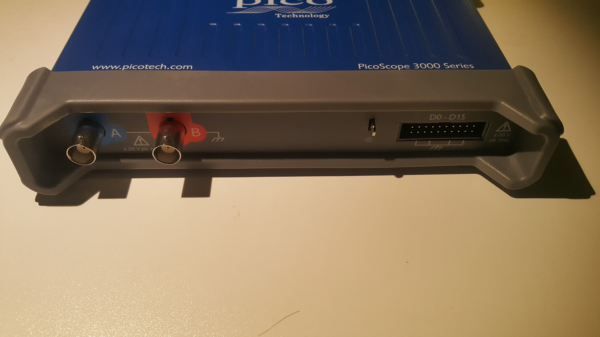 Picoscope 3205d Mso Fp
{kind=link}
 Sysclk Lwla2034 Mugshot
Sysclk Lwla2034 Mugshot
 Dvm4100
Dvm4100
 Eevblog 121gw Mugshot
Eevblog 121gw Mugshot
 Acute Pkla1216
Acute Pkla1216
 Tondaj Sl 814
Tondaj Sl 814
 Lecroy Wavesurfer 24xs A Front
Lecroy Wavesurfer 24xs A Front
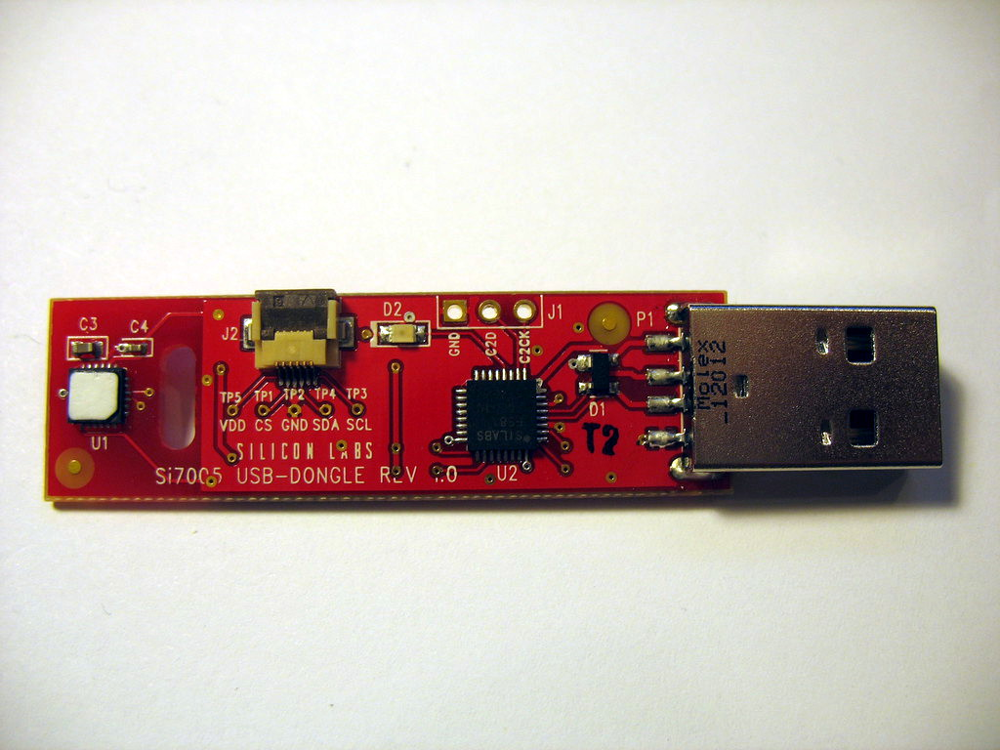 Silabs Si7005usb Dgl Eb Top
{kind=link}
 Voltcraft Me 42 Logo
Voltcraft Me 42 Logo
 Arachnid Labs Reload Pro Mugshot
Arachnid Labs Reload Pro Mugshot
 Noname La16 Mugshot
Noname La16 Mugshot
 Voltcraft M4660a Device Front
Voltcraft M4660a Device Front
 Usbee Ax Clone Front
Usbee Ax Clone Front
 Tenma 72 9380a
Tenma 72 9380a
 Logic Shrimp Front
Logic Shrimp Front
 Lab Nation Smartscope Mugshot
Lab Nation Smartscope Mugshot
 Minila Mockup
Minila Mockup
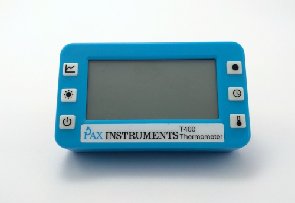 Pax Instruments T400
{kind=link}
 Rding Temper1 Device Front
Rding Temper1 Device Front
 Bbc Gm M2110 Mugshot
Bbc Gm M2110 Mugshot
 Asix Omega
Asix Omega
 Rs Hmc8043 Mugshot
Rs Hmc8043 Mugshot
 Hantek Pso2020 0
Hantek Pso2020 0
 Hantek 6254bd Mugshot
Hantek 6254bd Mugshot
 Peaktech3415 Top
Peaktech3415 Top
 El Usb 2
El Usb 2
 Cwav Usbee Sx
Cwav Usbee Sx
{kind=link}
 Zlg La1032
Zlg La1032
 Digitek Dt80000
Digitek Dt80000
 Xmos Xtag2
Xmos Xtag2
 Eeelec Xla Esla100
Eeelec Xla Esla100
 Peaktech2165 Front
Peaktech2165 Front
 Ztetech Ebd Usb 2b
Ztetech Ebd Usb 2b
 Sainsmart Dds140 Mugshot
Sainsmart Dds140 Mugshot
 Atten Pps3203t 3s
Atten Pps3203t 3s
 Velleman Ps3005d Mugshot
Velleman Ps3005d Mugshot
 Rding Temper Front
Rding Temper Front
 Kingst La2016 Mugshot
Kingst La2016 Mugshot
 Bitscope Bs10
Bitscope Bs10
 Picoscope 5203
Picoscope 5203
 Gpib Usb 82357b Clone
Gpib Usb 82357b Clone
 Nuvola Ok
Nuvola Ok
 Gmc Kmm2002 Logo
Gmc Kmm2002 Logo
 Philips Pm2813
Philips Pm2813
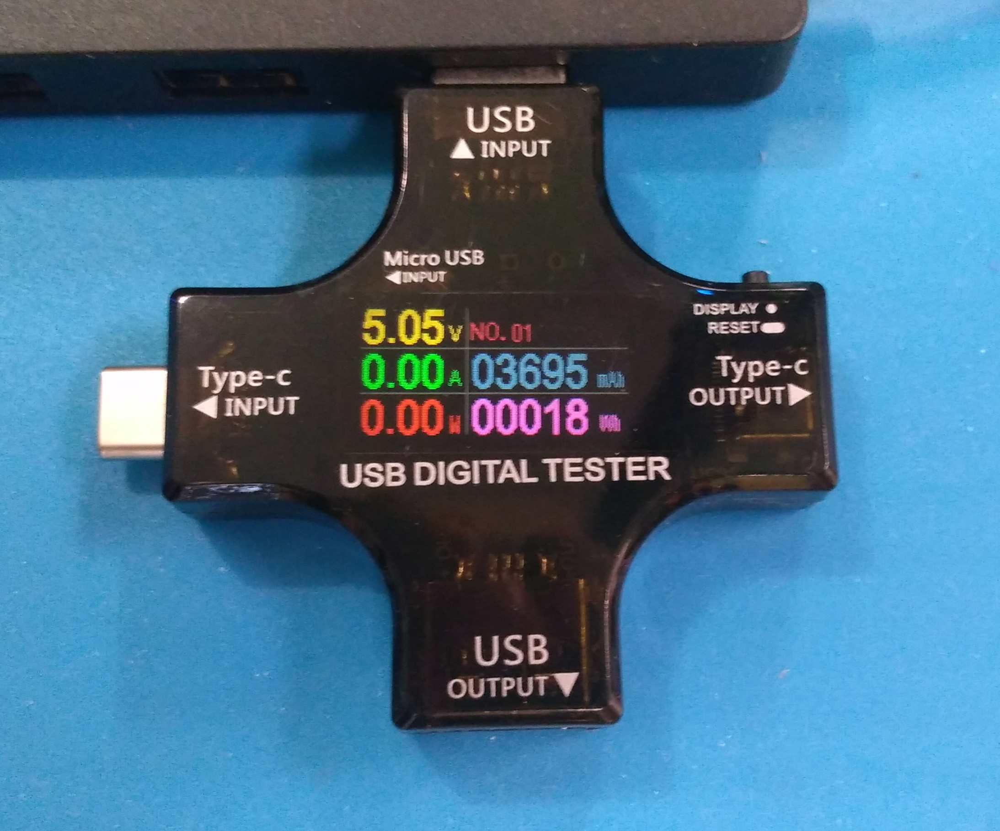 Atorch J7 C
{kind=link}
 Hung Chang Dso 2100 Mugshot
Hung Chang Dso 2100 Mugshot
 Atten Atz9711
Atten Atz9711
 Hp 3325a Front
Hp 3325a Front
 Sysclk Lwla1016
Sysclk Lwla1016
 Saanlima Pipistrello Ols
Saanlima Pipistrello Ols
 Brymen Bm257
Brymen Bm257
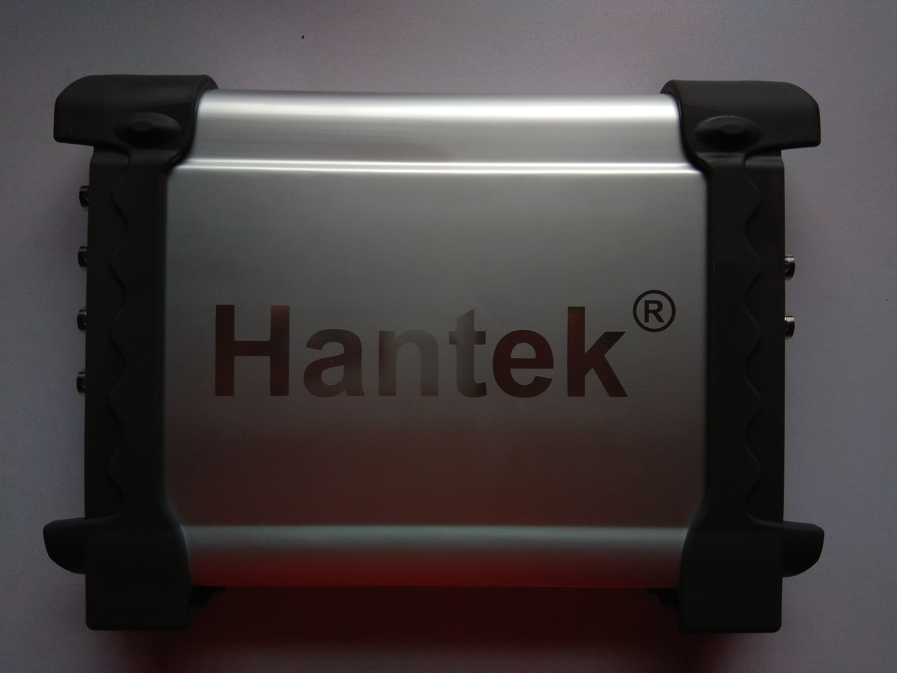 Dso3254a
{kind=link}
 Lcsoft Miniboard Front
Lcsoft Miniboard Front
 Victor 86c Device Front
Victor 86c Device Front
 Gossen Metrawatt Metrahit 25s Logo
Gossen Metrawatt Metrahit 25s Logo
 Intronix Logicport
Intronix Logicport
 Uni T Ut61d Device
Uni T Ut61d Device
 Hsa Logic
Hsa Logic
 Hantek 4032l Mugshot
Hantek 4032l Mugshot
 Ht410 Logo
Ht410 Logo
 Voltcraft M 3650d Transparent
Voltcraft M 3650d Transparent
 Rockylogic Ant8
Rockylogic Ant8
 Kingst Kqs3506 La16100
Kingst Kqs3506 La16100
 Voltcraft4080 2
Voltcraft4080 2
 Techtools Digiview Dv1 100
Techtools Digiview Dv1 100
 Galvantgpibusbrev4
Galvantgpibusbrev4
 Dg1000z Series
Dg1000z Series
 Gossen Metrawatt Metrahit 18s Small
Gossen Metrawatt Metrahit 18s Small
 Kecheng Kc 330b
Kecheng Kc 330b
 Uni T Ut325 Front
Uni T Ut325 Front
 Sds2304x Mugshot
Sds2304x Mugshot
{kind=link}
 Xzl Studio Dx Mugshot
Xzl Studio Dx Mugshot
 Uni T Utd2042c
Uni T Utd2042c
 Dcttech Usbrelay Mugshot
Dcttech Usbrelay Mugshot
 Hantek Dds 3x25 Top
Hantek Dds 3x25 Top
 Voltcraft Vc940
Voltcraft Vc940
 Robomotic Minilogic
Robomotic Minilogic
{kind=link}
 Mastech Mas345 Device Front
Mastech Mas345 Device Front
 Keysight 34465a Mugshot
Keysight 34465a Mugshot
 Fluke 187
Fluke 187
 Gdm 397 Front
Gdm 397 Front
 Dslogic
Dslogic
 Uni T Ut61c Mugshot
Uni T Ut61c Mugshot
 Elitech Rc3
Elitech Rc3
 Quantasylum Qa100
Quantasylum Qa100
 Fluke 287
Fluke 287
 Rocktech Bm102 Mugshot
Rocktech Bm102 Mugshot
 Sparkfun 70c Mugshot
Sparkfun 70c Mugshot
 Agilent 34401a Front
Agilent 34401a Front
 Wayengineer Saleae16
Wayengineer Saleae16
 Voltcraft Vc830
Voltcraft Vc830
{kind=link}
 Acme
Acme
 Nuvola Red
Nuvola Red
 Meterman 38xr
Meterman 38xr
 Chronovu La8 Front
Chronovu La8 Front
 Mastech Ms6252b
Mastech Ms6252b
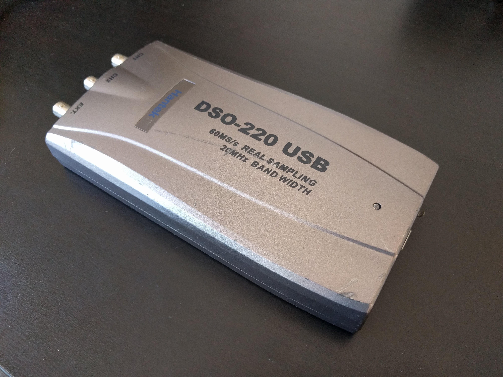 Hantek Dso 220 Back
{kind=link}
 Saleae Logic Pro 8 Bottom
Saleae Logic Pro 8 Bottom
 Ar488 Artag Pcb Top
Ar488 Artag Pcb Top
 Pce 322a
Pce 322a
 Picoscope 2204a
Picoscope 2204a
 Sysclk Lwla1034 Mugshot
Sysclk Lwla1034 Mugshot
 Old Ver Front
Old Ver Front
 Cem Dt 8852
Cem Dt 8852
{kind=link}
 Hp 3457a Sigrok Teaser
Hp 3457a Sigrok Teaser
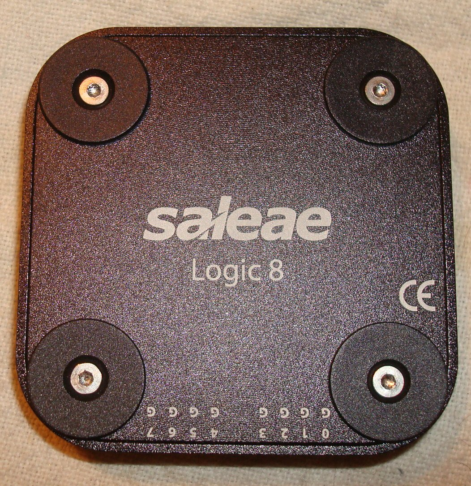 Saleae Logic8 Case Bottom
{kind=link}
 Ut71c Mugshot
Ut71c Mugshot
 Lecroy Logicstudio16 Mugshot
Lecroy Logicstudio16 Mugshot
 Voltcraft M3890dt Usb
Voltcraft M3890dt Usb
 Radioshack 22 812 Front
Radioshack 22 812 Front
 Va Va18b
Va Va18b
 Uni T Ut181a Mugshot
Uni T Ut181a Mugshot
 Voltcraft M4650cr
Voltcraft M4650cr
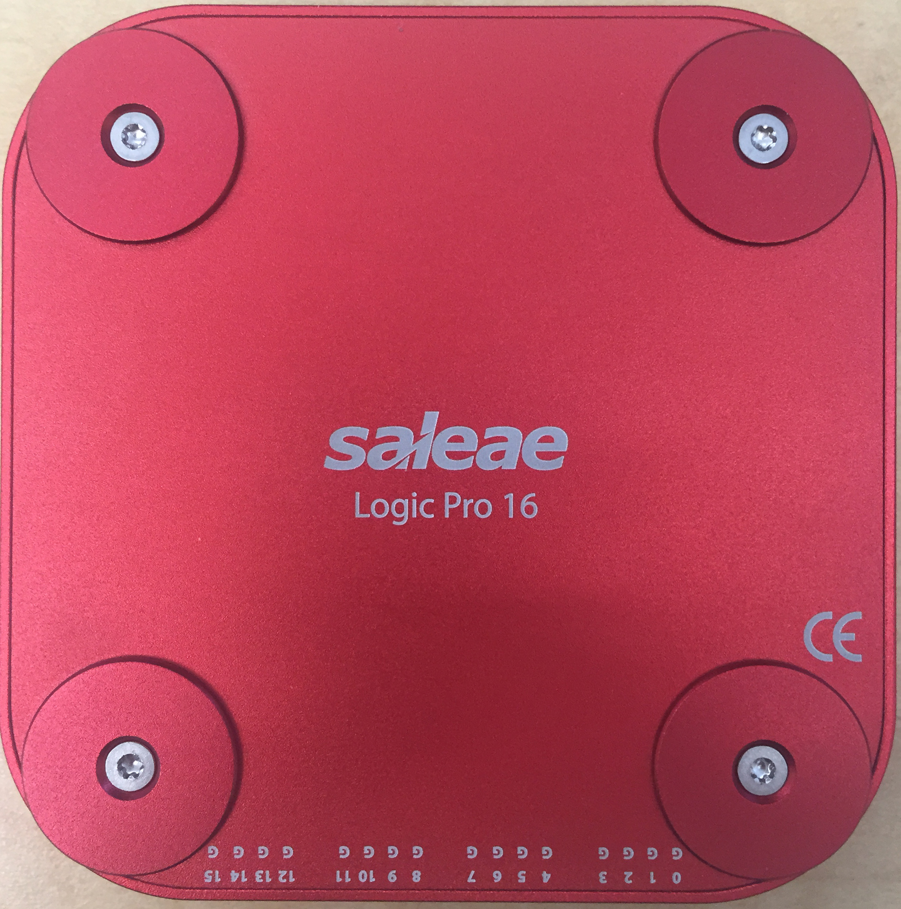 Saleae Logic Pro 16 Bottom
{kind=link}
 Microchip Pickit2
Microchip Pickit2
 Gdm 8251a Frontpanel
Gdm 8251a Frontpanel
 Braintechnology Usb Lps
Braintechnology Usb Lps
 Rdtech Dps
Rdtech Dps
{kind=link}
 Hp 5350b
Hp 5350b
{kind=link}
 Buspirate V3
Buspirate V3
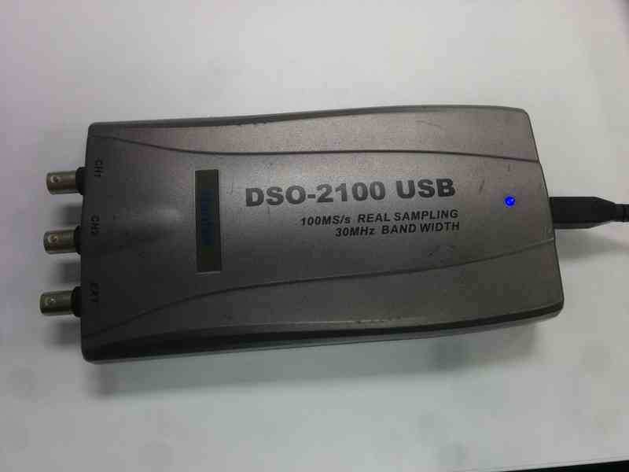 Hantek Dso 2100 Usb
{kind=link}
 Siglent Sds1202x E Front
Siglent Sds1202x E Front
 Rigol Dg811 Frontpanel
Rigol Dg811 Frontpanel
 Voltcraft Vc920
Voltcraft Vc920
 Appa 107
Appa 107
 Metex M3850m Mugshot
Metex M3850m Mugshot
 Voltcraft Vc840 Device Front
Voltcraft Vc840 Device Front
 Owon Xdm2041
Owon Xdm2041
 Ni Gpib Usb Hs
Ni Gpib Usb Hs
 Agilent Mso7104a
Agilent Mso7104a
 Gsg Indoor Air Monitor
Gsg Indoor Air Monitor
 Noname Saleae Logic Clone Mugshot
Noname Saleae Logic Clone Mugshot
 Braintechnology Usb Interface V26
Braintechnology Usb Interface V26
 Vellemanwfs210
Vellemanwfs210
 Tenma 72 7750
Tenma 72 7750
 Hameg Hmo2024
Hameg Hmo2024
 Rigol Ds1052e
Rigol Ds1052e
 100px Idm103n
100px Idm103n
 Bm 857 Mugshot 500000
Bm 857 Mugshot 500000
 Mooshimeter Mugshot
Mooshimeter Mugshot
 Siemens B1026 Logo
Siemens B1026 Logo
Atorch Dl24mp 150w Purple Picture
{kind=link}
 Usbduxfast
Usbduxfast
 Digitek Dt8000
Digitek Dt8000
 Chronovu La16
Chronovu La16
 Nuvola Orange
Nuvola Orange
 Metrix Mx53
Metrix Mx53
 Esla201a
Esla201a
 Gossen Metrawatt Metrahit 16i Small
Gossen Metrawatt Metrahit 16i Small
 Metex Me 31
Metex Me 31
 Rigol Ds2072 Mugshot
Rigol Ds2072 Mugshot
 Voltcraft Dso 220 Usb
Voltcraft Dso 220 Usb
 Peaktech 3442 Front
Peaktech 3442 Front
 Greatfet Mugshot
Greatfet Mugshot
 Picoscope 2205
Picoscope 2205
 Agilent Dso1014a
Agilent Dso1014a
 Kern Ew 6200 2nm Mugshot
Kern Ew 6200 2nm Mugshot
 Voltcraft Vc890 Mugshot
Voltcraft Vc890 Mugshot
 Link Instruments Mso 19 Front
Link Instruments Mso 19 Front
 Picoscope 2203
Picoscope 2203
 Dangerous Prototypes Irtoy Mugshot
Dangerous Prototypes Irtoy Mugshot
 Bm869 Mugshot
Bm869 Mugshot
 Arduino Uno R3
Arduino Uno R3
 Voltcraft Dso 6060c Mugshot
Voltcraft Dso 6060c Mugshot
 Kingst La5016 Mugshot
Kingst La5016 Mugshot
 Agilent 34405a
Agilent 34405a
 Osciprime
Osciprime
 Tecpel Dmm8061
Tecpel Dmm8061
 Zeroplus Lap 16128u
Zeroplus Lap 16128u
 Voltcraft M 3650cr
Voltcraft M 3650cr
 Gembird Silvershield Front
Gembird Silvershield Front
 Meilhaus Logian 16l Mugshot
Meilhaus Logian 16l Mugshot
 Lutron Yk 2005lx
Lutron Yk 2005lx
 Voltcraft 3850d Front Transp
Voltcraft 3850d Front Transp
 Prist Akip 9101 Mugshot
Prist Akip 9101 Mugshot
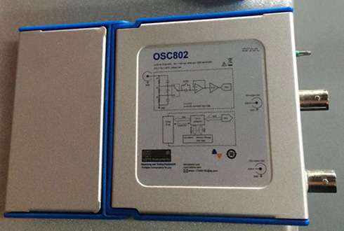 Loto Osc802
{kind=link}
 Hobby Components Hctest0006 Mugshot
Hobby Components Hctest0006 Mugshot
 Fluke Scopemeter 199b
Fluke Scopemeter 199b
 Rigol Ds1074z Front
Rigol Ds1074z Front
 Robomotic Buglogic3
Robomotic Buglogic3
 Noname Xl Logic16 100m Mugshot
Noname Xl Logic16 100m Mugshot
 Der Ee De 5000 Mugshot
Der Ee De 5000 Mugshot
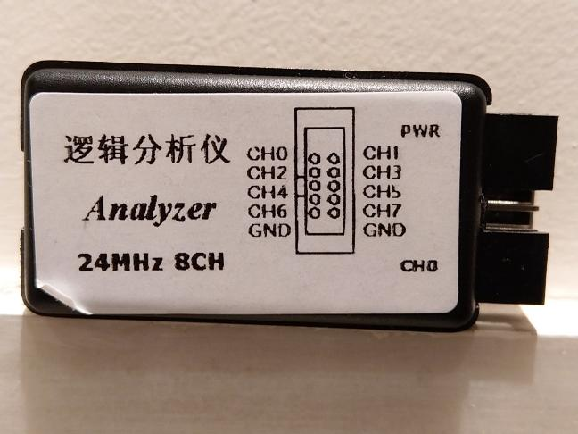 128axc Usbee Axpro Clone Overview
{kind=link}
 Noname Lht00su1 Mugshot
Noname Lht00su1 Mugshot
 Sysclk Ax Pro Mugshot
Sysclk Ax Pro Mugshot
 Jds6600 Mugshot
Jds6600 Mugshot
 Saleae Logic16 Bottom
Saleae Logic16 Bottom
 Rd6006 Frontpanel
Rd6006 Frontpanel
 Motech Lps 301 Logo
Motech Lps 301 Logo
{kind=link}
 Tenma 72 1016
Tenma 72 1016
 Voltcraft Dl 120th
Voltcraft Dl 120th
{kind=link}
 Siemens B1105 Small
Siemens B1105 Small
 Ut60e Front Alpha
Ut60e Front Alpha
 Rockylogic Ant18e
Rockylogic Ant18e
 Maul Studio I
Maul Studio I
 Dslogic U3pro16
Dslogic U3pro16
 Um24c Display
Um24c Display
 Mastech Ms2115b Mugshot
Mastech Ms2115b Mugshot
 Ikalogic Scanaplus Mugshot
Ikalogic Scanaplus Mugshot
{kind=link}
 Voltcraft Co 20
Voltcraft Co 20
 Benning Mm 12 01 Front Sleeve
Benning Mm 12 01 Front Sleeve
 Saleae Logic
Saleae Logic
 Bg7tbl Small
Bg7tbl Small
 Az Delivery Logic Analyzer
Az Delivery Logic Analyzer
 Brymen Bm257s Mugshot
Brymen Bm257s Mugshot
 Hantek Dso 2090
Hantek Dso 2090
 Uni T Ut61b Mugshot
Uni T Ut61b Mugshot
 Voltcraft Dso 3062c
Voltcraft Dso 3062c
 Hp3478a Mugshot
Hp3478a Mugshot
 Pce Pce Dm32
Pce Pce Dm32
 Rdtech Tc66c Mugshot
Rdtech Tc66c Mugshot
 Ht Usbee Dxpro Mugshot
Ht Usbee Dxpro Mugshot
 Peaktech 4390 Mugshot
Peaktech 4390 Mugshot
 Rs Hmp4040 Mugshot
Rs Hmp4040 Mugshot
 Hantek Dso 5200a Device Front
Hantek Dso 5200a Device Front
 Conrad Digi 35 Cpu Logo
Conrad Digi 35 Cpu Logo
 Pce Pce 222 Front
Pce Pce 222 Front
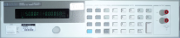 Hp 6632b Mugshot
{kind=link}
 Rigol Dm3068 Front
Rigol Dm3068 Front
 Gmc Metrahit 14a Logo
Gmc Metrahit 14a Logo
 Itech It8511plus Frontpanel
Itech It8511plus Frontpanel
 Armfly Ax Pro
Armfly Ax Pro
 Voltcraft Dl 161s
Voltcraft Dl 161s
 Bm829s Mugshot
Bm829s Mugshot
 Rs 22 805 Front
Rs 22 805 Front
 Polabs Poscope Basic2
Polabs Poscope Basic2
 Fluke 45 Mugshot
Fluke 45 Mugshot
 Va Va40b Mugshot
Va Va40b Mugshot
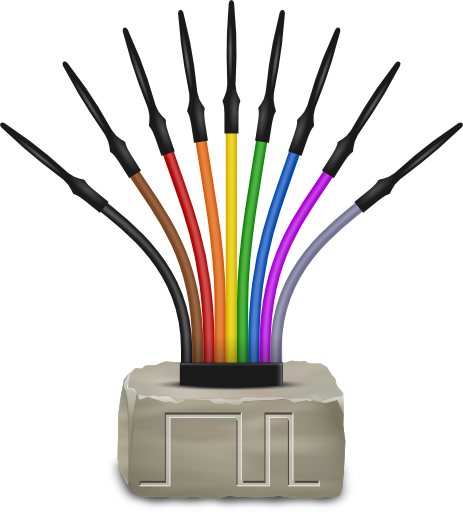 Sigrok Logo No Text Transparent 512
{kind=link}
 Tenma 72 7745
Tenma 72 7745
 Zeroplus Logic Cube
Zeroplus Logic Cube
 Rs 22 168 Mugshot
Rs 22 168 Mugshot
 Xzl Studio Ax Mugshot
Xzl Studio Ax Mugshot
{kind=link}
 Siglent Sdg1010 Device Front 8116
Siglent Sdg1010 Device Front 8116
 Hantek 1008c
Hantek 1008c
 Hantek Dso2250 Mugshot
Hantek Dso2250 Mugshot
 Voltcraft Vc 950 01 Front
Voltcraft Vc 950 01 Front
 Mic 98583
Mic 98583
 Ikalogic Scanalogic2
Ikalogic Scanalogic2
 Gwinstek Gpd 3303s
Gwinstek Gpd 3303s
 Digilent Analog Discovery
Digilent Analog Discovery
 Ideofy La 08
Ideofy La 08
 Escort 179 Device Front
Escort 179 Device Front
 Voltcraft Dl 160s
Voltcraft Dl 160s
 Openbench Logic Sniffer Front
Openbench Logic Sniffer Front
Envox Eez Bb3 Enclosure Prototype
{kind=link}
Dreamsourcelab Dscope C20p Front
{kind=link}
 Voltcraft Vc96 Mugshot
Voltcraft Vc96 Mugshot
 Voltcraft Vc820 Device
Voltcraft Vc820 Device
 Agilent 33120a Front
Agilent 33120a Front
 Mastech Ms8250d Mugshot
Mastech Ms8250d Mugshot
 Gossen Metrahit 30m
Gossen Metrahit 30m
 Ni Gpib Enet
Ni Gpib Enet
 Voltcraft Vc870 Mugshot
Voltcraft Vc870 Mugshot
 Testo 435 4
Testo 435 4
 Peaktech 4380 Mugshot
Peaktech 4380 Mugshot
 Prologix Usb
Prologix Usb
 Dds120 Mugshot
Dds120 Mugshot
 Rigol Vs5202d
Rigol Vs5202d
 Victor 70c
Victor 70c
 Voltcraft K204
Voltcraft K204
 Per Vices Noctar
Per Vices Noctar
 Gdm 9061 Frontpanel
Gdm 9061 Frontpanel
 Hp 59306a Mugshot
Hp 59306a Mugshot
 Escort 19
Escort 19
 Agilent U1732b
Agilent U1732b
 Actaris A14c5 Teleinfo
Actaris A14c5 Teleinfo
 Armfly Mini Logic
Armfly Mini Logic
 Mcupro Logic16 Overview
Mcupro Logic16 Overview
 Mic 98581
Mic 98581
 Devantech Eth008b Mugshot
Devantech Eth008b Mugshot
 Fluke Scopemeter123
Fluke Scopemeter123
 Peaktech 4370 Device Front
Peaktech 4370 Device Front
 Digitek Dt4000zc Device Front
Digitek Dt4000zc Device Front
Agilent 82357a Top Cover Removed
{kind=link}
 Rding Temper Gold Device Front
Rding Temper Gold Device Front
 Beiming S82357
Beiming S82357
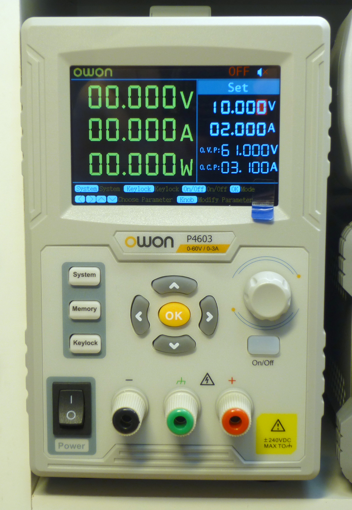 Owon P4603
{kind=link}
 Hantek Idso1070a
Hantek Idso1070a
 Peaktech 3330 Mugshot
Peaktech 3330 Mugshot
 800px Mastech M9803r Device Front
800px Mastech M9803r Device Front
 Velleman Pcsu1000
Velleman Pcsu1000
 Metrix Mx56c
Metrix Mx56c
 Tp4000zc Front
Tp4000zc Front
 Gmc Metrahit 29s Logo
Gmc Metrahit 29s Logo
 Bm859s Front Sleeve
Bm859s Front Sleeve
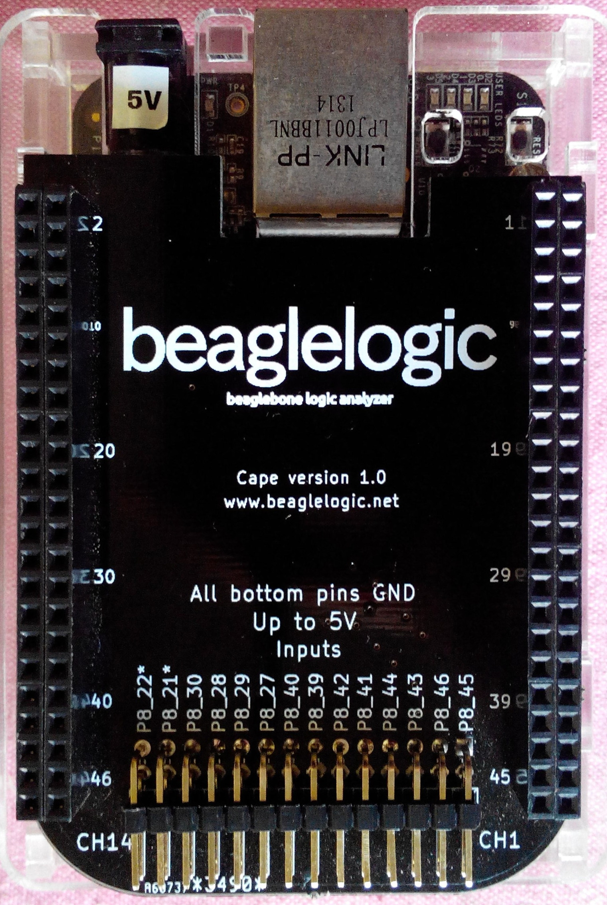 Beaglelogic
{kind=link}
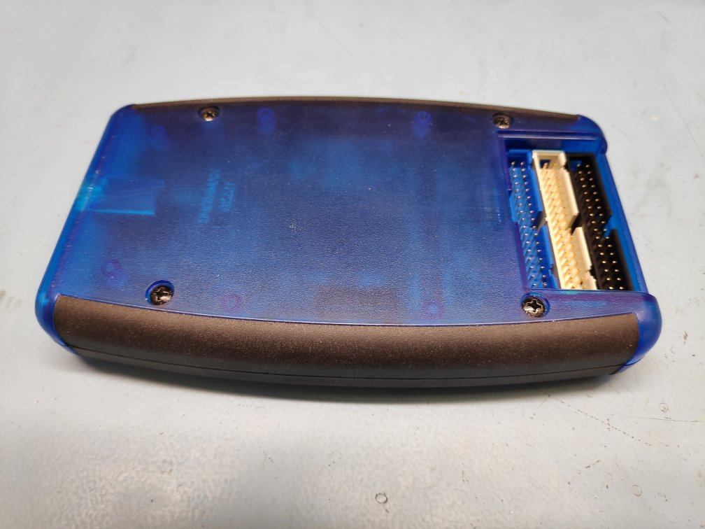 Img 20191206 105430
{kind=link}
 Voltcraft Dl 140th
Voltcraft Dl 140th
 Meilhaus Mephisto Scope1
Meilhaus Mephisto Scope1
 Colead Sl 5868p
Colead Sl 5868p
 Rs55ii
Rs55ii
 Uni T Ut81b Mugshot
Uni T Ut81b Mugshot
 Tenma 72 7730
Tenma 72 7730
 Ni Usb 6008
Ni Usb 6008
 Tektronix Tla5204 1000
Tektronix Tla5204 1000
 Chroma 61604 Front
Chroma 61604 Front
 Pcsensor Temper1k2
Pcsensor Temper1k2
 Rs Pro S2 01 Front
Rs Pro S2 01 Front
 Tektronix Tds2024b Mugshot
Tektronix Tds2024b Mugshot
 Focussz Fosc21 Mugshot
Focussz Fosc21 Mugshot
 Metex M4650cr Mugshot
Metex M4650cr Mugshot
 Manson Hcs3202
Manson Hcs3202
 Tenma 72 7732
Tenma 72 7732
 Picoscope 3206
Picoscope 3206
 Rigol Dp832
Rigol Dp832
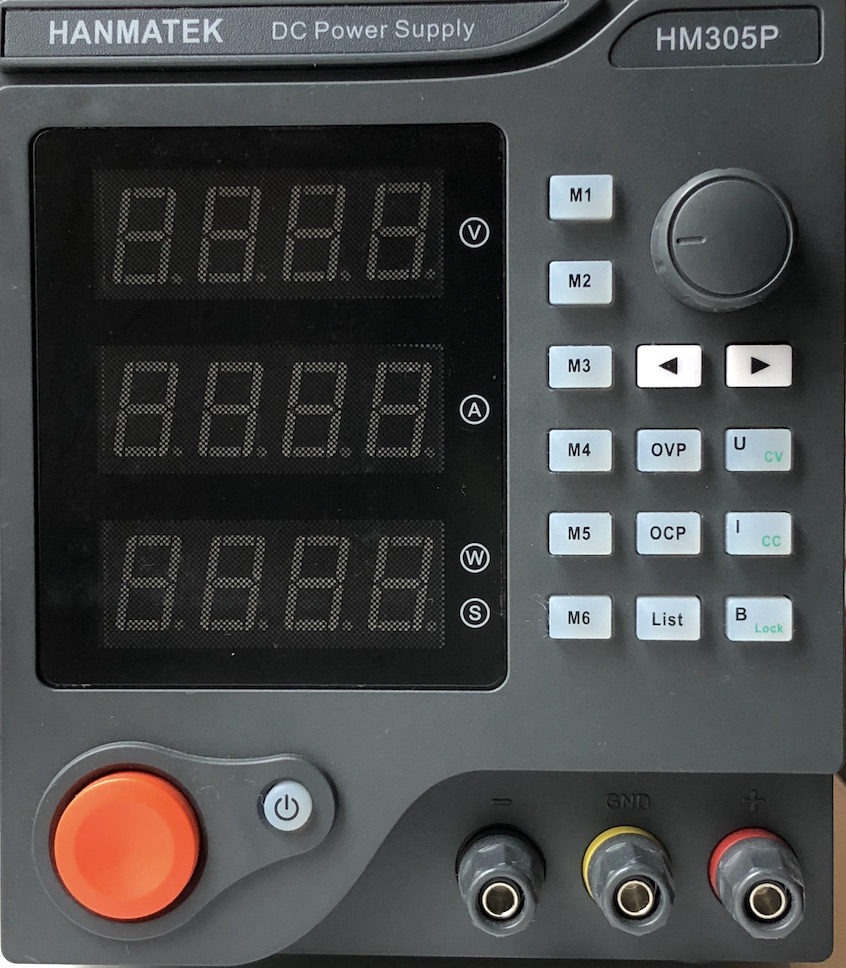 Hanmatek Hm305p Front
{kind=link}
 Ics 488 Usb
Ics 488 Usb
 Jtagulator Transparent
Jtagulator Transparent
 Bm525s Mugshot
Bm525s Mugshot
 Mastech Ms8250b Mugshot
Mastech Ms8250b Mugshot
 Minila Parport
Minila Parport
 Peaktech 2170 Mugshot
Peaktech 2170 Mugshot
 El Usb Co
El Usb Co
 Icstation Icse012a Mugshot
Icstation Icse012a Mugshot
 Maynuo M9812 Mugshot
Maynuo M9812 Mugshot
 Hantek 6022be Mugshot
Hantek 6022be Mugshot
 Rs Hmo1002
Rs Hmo1002
 Asix Sigma 2
Asix Sigma 2
 Sysclk Sla5032 Mugshot
Sysclk Sla5032 Mugshot
 Mcu123 Saleae Logic Clone
Mcu123 Saleae Logic Clone
 Yixingdianzi Mdso
Yixingdianzi Mdso
 Agilent U1232a
Agilent U1232a
 Agilent 66312a Mugshot
Agilent 66312a Mugshot
 Norma Dm950
Norma Dm950
 Uni T Ut372 Mugshot
Uni T Ut372 Mugshot
 Mastech Ms6514 Mugshot
Mastech Ms6514 Mugshot
{kind=link}